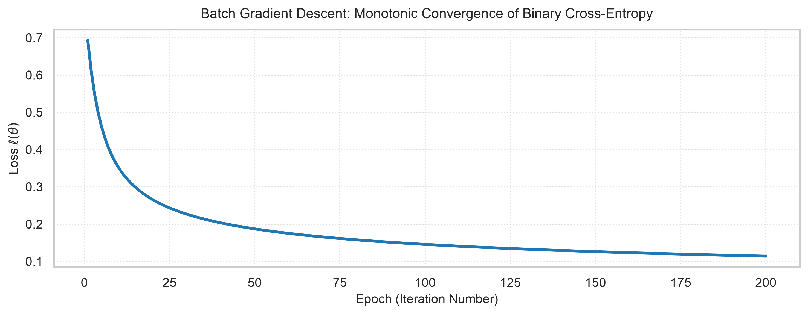

08 Logistic Regression: Computation
Mathematics for Machine Learning (Mathe3)
Iterative Solvers, Gradient Mechanics, and Scikit-Learn
0. Pre-Class Preparation
NoteFlipped Classroom Preparation Checklist
Before joining this session, please review the following foundational materials:
1. The Computational Roadblock: Why Analytical OLS Fails
1.1 Closed-Form Normal Equations vs. Non-Linear Entrapment
In Ordinary Least Squares (OLS) linear regression, the gradient of the Mean Squared Error is purely linear in \(\theta\): \[\nabla_\theta S(\theta) = -\frac{2}{n}X^T(y - X\theta) = 0 \iff X^T X \theta = X^T y\]
Because the system is linear, we invert it in one step: \(\hat{\theta}_{\text{OLS}} = (X^T X)^{-1} X^T y\).
In Logistic Regression, setting the gradient of the loss function \(\ell(\theta)\) to zero yields: \[\nabla_\theta \ell(\theta) = \frac{1}{n}\sum_{i=1}^n \left( \sigma(x_i^T \theta) - y_i \right) x_i = \frac{1}{n}\sum_{i=1}^n \left( \frac{1}{1 + e^{-x_i^T \theta}} - y_i \right) x_i = 0\]
ImportantThe Fundamental Analytical Roadblock
The parameter vector \(\theta\) is trapped non-linearly inside the exponential of the denominator. No algebraic linear algebra transformation can isolate \(\theta\). There is no \((X^T X)^{-1}\) formula for logistic regression. We must find \(\theta\) through iterative numerical optimization.
2. Gradient Techniques Under the Hood
2.1 Vectorized Gradient Derivation
Using the calculus chain rule through the sigmoid link: \[\frac{\partial \ell}{\partial \theta} = \frac{\partial \ell}{\partial \hat{y}} \cdot \frac{\partial \hat{y}}{\partial z} \cdot \frac{\partial z}{\partial \theta} = \left( -\frac{y}{\hat{y}} + \frac{1-y}{1-\hat{y}} \right) \cdot \left[ \hat{y}(1-\hat{y}) \right] \cdot x = (\hat{y} - y)x\]
In compact matrix notation: \[\boxed{\nabla_\theta \ell(\theta) = \frac{1}{n} X^T (\hat{y} - y)}\]
TipPedagogical Symmetry
Observe the structural twin: the gradient has the exact same form as linear regression, \(\frac{1}{n} X^T(\text{predictions} - \text{targets})\), with the non-linearity cleanly isolated in \(\hat{y} = \sigma(X\theta)\).
2.2 Batch Gradient Descent (BGD) from Scratch
The Batch Gradient Descent update rule with learning rate \(\alpha > 0\) is: \[\theta^{(k+1)} = \theta^{(k)} - \frac{\alpha}{n} X^T \left( \sigma(X\theta^{(k)}) - y \right)\]
Batch Gradient Descent Implementation from Scratch
np.random.seed(42)
n = 150
glucose = np.random.uniform(70, 180, n)
bmi = np.random.uniform(18, 42, n)
z_true = -12.0 + 0.07 * glucose + 0.15 * bmi
y = (1.0 / (1.0 + np.exp(-z_true)) > 0.5).astype(int)
# Mandatory feature standardization
X_raw = np.column_stack([glucose, bmi])
X_mean, X_std = np.mean(X_raw, axis=0), np.std(X_raw, axis=0)
X_scaled = (X_raw - X_mean) / X_std
X_design = np.column_stack([np.ones(n), X_scaled])
# Gradient Descent Loop
theta = np.zeros(3)
alpha = 0.5
epochs = 200
loss_history = []
for ep in range(epochs):
p = 1.0 / (1.0 + np.exp(-X_design @ theta))
loss = -np.mean(y * np.log(p + 1e-12) + (1 - y) * np.log(1 - p + 1e-12))
loss_history.append(loss)
grad = (1.0 / n) * (X_design.T @ (p - y))
theta -= alpha * grad
fig, ax = plt.subplots(figsize=(10, 4.0))
ax.plot(range(1, epochs + 1), loss_history, color='#1f77b4', lw=2.5)
ax.set_title('Batch Gradient Descent: Monotonic Convergence of Binary Cross-Entropy', fontsize=12, pad=10)
ax.set_xlabel('Epoch (Iteration Number)', fontsize=11)
ax.set_ylabel(r'Loss $\ell(\theta)$', fontsize=11)
ax.grid(True, linestyle=':', alpha=0.6)
plt.tight_layout()
plt.show()
print(f"Final fitted parameters: theta0 (bias) = {theta[0]:.3f}, theta_glucose = {theta[1]:.3f}, theta_bmi = {theta[2]:.3f}")
Final fitted parameters: theta0 (bias) = 1.947, theta_glucose = 4.441, theta_bmi = 1.9263. Second-Order Curvature: Newton-Raphson & IRLS
3.1 The Hessian Matrix and Quadratic Approximation
While Gradient Descent uses only first derivatives (taking linear steps down the steepest slope), Newton-Raphson uses the curvature given by the second-derivative Hessian matrix:
\[H = \nabla^2 \ell(\theta) = \frac{1}{n} X^T W X\]
where \(W \in \mathbb{R}^{n \times n}\) is a diagonal weight matrix of sample variances:
\[W_{ii} = \hat{y}_i(1 - \hat{y}_i) = \sigma(x_i^T \theta)\left(1 - \sigma(x_i^T \theta)\right)\]
Newton Update:
\[\theta^{(k+1)} = \theta^{(k)} - H^{-1} \nabla \ell(\theta^{(k)})\]
Iteratively Reweighted Least Squares (IRLS): This update can be rearranged into a weighted normal equation:
\[\theta^{(k+1)} = \left(X^T W_k X\right)^{-1} X^T W_k z_k\]
where \(z_k = X\theta^{(k)} + W_k^{-1}(y - \hat{y}^{(k)})\) is an adjusted working response.
The Computational Bottleneck: Inverting \(H\) requires \(\mathcal{O}(p^3)\) operations. When \(p > 10,000\) features, exact Newton steps become completely intractable.
Quasi-Newton L-BFGS: Approximates the inverse Hessian \(H^{-1}\) using recent gradient histories without storing the full \(p \times p\) matrix.
4. Scikit-Learn Excursion & Practical Engineering
4.1 Production Pipeline with Standardization
In scikit-learn, LogisticRegression uses solver="lbfgs" by default. Because L-BFGS assumes isotropic curvature, feature standardization (\(Z\)-scoring) is essential:
# Robust scikit-learn pipeline
pipeline = make_pipeline(
StandardScaler(),
LogisticRegression(penalty='l2', C=1.0, solver="lbfgs", max_iter=500, random_state=42)
)
pipeline.fit(X_raw, y)
clf = pipeline.named_steps['logisticregression']
print(f"Scikit-Learn Intercept (theta0): {clf.intercept_[0]:.4f}")
print(f"Scikit-Learn Glucose Weight (theta1): {clf.coef_[0, 0]:.4f}")
print(f"Scikit-Learn BMI Weight (theta2): {clf.coef_[0, 1]:.4f}")Scikit-Learn Intercept (theta0): 1.7938
Scikit-Learn Glucose Weight (theta1): 3.8587
Scikit-Learn BMI Weight (theta2): 1.6265/Users/manke/micromamba/envs/mathe3/lib/python3.11/site-packages/sklearn/linear_model/_logistic.py:1381: FutureWarning: 'penalty' was deprecated in version 1.8 and will be removed in 1.10. To avoid this warning, leave 'penalty' set to its default value and use 'l1_ratio' or 'C' instead. Use l1_ratio=0 instead of penalty='l2', l1_ratio=1 instead of penalty='l1', l1_ratio set to a float between 0 and 1 instead of penalty='elasticnet', and C=np.inf instead of penalty=None.
warnings.warn(4.2 Regularization via C = 1 / λ and Complete Separation
- The Complete Separation Danger: If healthy and diabetic patients can be separated with 100% precision without overlap, standard maximum likelihood drives \(\|\theta\| \to \infty\) and \(\sigma(z) \to \{0, 1\}\), causing optimizer divergence.
- Regularization Parameter
C:- Scikit-learn penalizes weights using \(C = \frac{1}{\lambda}\).
- Small \(C\) (e.g. \(C = 0.01\)): Strong regularization, prevents overfitting and tames weight explosion.
- Large \(C\) (e.g. \(C = 100\)): Weak regularization, fits data aggressively.
5. Review & Key Takeaways
| Method | Order | Per-Step Complexity | Convergence Speed | Scalability in \(D\) |
|---|---|---|---|---|
| Analytical OLS | Closed-Form | \(\mathcal{O}(nD^2 + D^3)\) (one step) | N/A (Linear only) | Fails for \(D > 10^4\) |
| Batch Gradient Descent (BGD) | 1st Order | \(\mathcal{O}(nD)\) per epoch | Linear (moderate) | Excellent |
| Newton-Raphson / IRLS | 2nd Order | \(\mathcal{O}(nD^2 + D^3)\) per step | Quadratic (very fast: 4–8 steps) | Poor when \(D\) is large |
| Quasi-Newton (L-BFGS) | 1st + Hist | \(\mathcal{O}(m \cdot D)\) per step | Superlinear (fast) | Standard Industry Default |
ImportantCore Pedagogical Takeaways
- Iterative Solvers are Mandatory: Non-linear likelihood gradients cannot be inverted in closed form.
- Feature Scaling is Essential: Without \(Z\)-scores, gradient descent zig-zags across elongated loss contours.
- L-BFGS is the Modern Workhorse: It captures second-order curvature without the crippling \(O(D^3)\) cost of full matrix inversion.
- Next Lecture Preview: In Lecture 09: Logistic Regression: Continuation, we expand from single binary outputs to multivariate categorical targets, one-hot encoding, parameter matrices \(Z = X\Theta\), Softmax, and the direct bridge to Artificial Neural Networks.